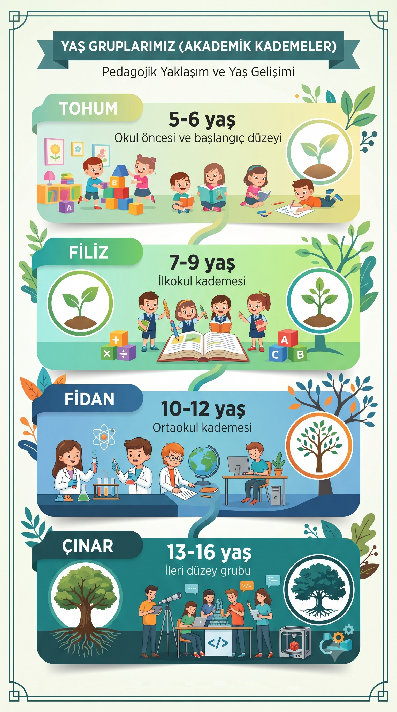
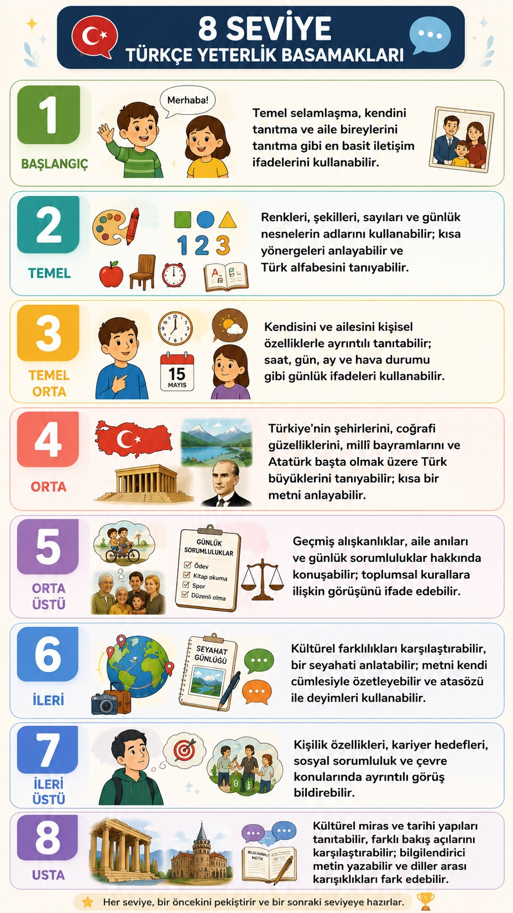

Yurt dışındaki öğrencilerimiz için özel olarak geliştirilen "Ülkem Yanımda" platformunda sınıflarımız;
öğrencilerin yaş gelişim akademik kademelerine ve 8 aşamalı dil yetkinlik seviyelerine göre tam optimize şekilde yapılandırılmaktadır.
Öğrencilerimizin yaş gelişimine uygun pedagojik yaklaşımı ve materyalleri belirlemek için 4 ana kademe esas alınır:

[ yas.jpg afişiniz bu alanda görüntülenecektir. Dosyanın web sayfasıyla aynı klasörde olduğundan emin olunuz. ]
Milli Eğitim Bakanlığı müfredatı ve uluslararası dil portfolyolarına uygun olarak güncellenen 8 aşamalı seviye yapımız:
Seviye 1
Farkındalık ve İlk Adım (A1.1)
Türkçeyle yeni tanışan, hiç bilmeyen ya da sadece birkaç kelime duymuş olan çocuklar için temel ses, alfabe ve tanışma adımları.
Seviye 2
Temel İletişim / Dinleyici (A1.2)
Günlük hayattaki çok basit ve somut ifadeleri, talimatları anlayabilen ancak kendisini ifade etmekte yoğun desteğe ihtiyaç duyanlar.
Seviye 3
Kendini İfade Etme / Başlangıç Konuşmacı (A2.1)
Ailesi ve yakın çevresiyle ilgili basit cümleler kurabilen, temel ihtiyaçlarını (açlık, oyun, istekler) Türkçe ifade edebilen seviye.
Seviye 4
Gelişen Konuşma ve Akıcılık (A2.2)
Karşılıklı konuşmaları rahatça takip edip katılan, ancak okuma ve yazma gibi akademik becerilerde henüz yolun başında olanlar.
Seviye 5
Okuryazarlık Köprüsü (B1.1)
Türkçe konuşmada yetkin olup, okuma-yazma kurallarını, harf-ses ilişkilerini akademik düzeyde yeni öğrenmeye başlayanlar.
Seviye 6
Bağımsız Kullanıcı / Metin Çözümleme (B1.2)
Kendi başına kısa hikayeler okuyabilen, basit kompozisyonlar yazabilen ve soyut kavramlar üzerine basit düzeyde fikir yürütenler.
Seviye 7
Kültürel Yetkinlik ve Akıcı Dil (B2.1)
Türkçeyi hem sosyal hem de yapısal olarak doğru kullanan; atasözleri, deyimler ve Türk kültür ögelerini rahatça yorumlayabilen grup.
Seviye 8
Tam Akademik Yetkinlik (B2.2 ve Üzeri)
Anadil seviyesinde anlama, konuşma, okuma ve yazma becerisine sahip; edebi metinleri analiz edebilen en ileri düzey akademik grup.

[ dil.jpg afişiniz bu alanda görüntülenecektir. Dosyanın web sayfasıyla aynı klasörde olduğundan emin olunuz. ]
Pedagojik verimlilik açısından sınıflarımız oluşturulurken bu iki ana kriter (Yaş Grubu + Dil Seviyesi) matris şeklinde birleştirilir: